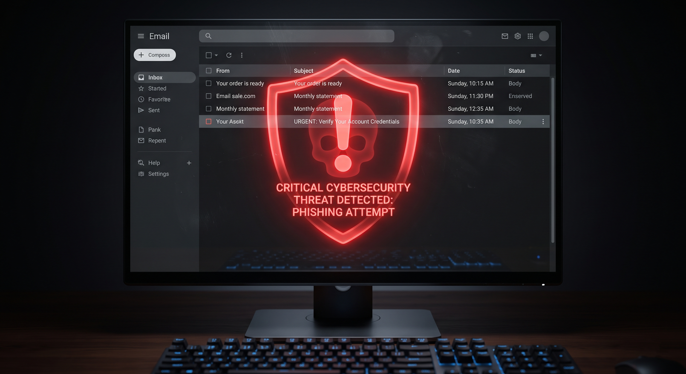

Et si l'arnaque venait de votre entreprise ?

Que se passerait-il si, aujourd'hui, vos clients ou patients recevaient une fausse facture comportant un nouveau numéro de compte, provenant apparemment directement de votre adresse e-mail officielle ?
Pour un dirigeant, ce scénario est une catastrophe : perte de confiance, factures payées à des escrocs, et responsabilité engagée. Bien souvent, ce type d'arnaque est le résultat de deux menaces combinées : le Spoofing (usurpation d'identité) et le Phishing (hameçonnage).
Le "Spoofing" : Usurper sans même pirater votre mot de passe
La réalité technique est parfois surprenante. Les cybercriminels n'ont pas toujours besoin de pirater votre boîte mail pour se faire passer pour vous. Imaginez envoyer une lettre par la Poste : vous pouvez écrire l'adresse de n'importe qui au dos de l'enveloppe dans la case "Expéditeur". C'est exactement ce que font les pirates informatiques avec les e-mails.
Si la configuration technique de votre nom de domaine (les paramètres SPF, DKIM, DMARC gérés par votre hébergeur) n'est pas strictement verrouillée, n'importe quel pirate peut envoyer un e-mail de phishing extrêmement convaincant en utilisant votre nom, pour tromper vos propres clients.
Le Phishing et la fuite de données (Le vrai danger)
L'autre méthode, encore plus redoutable, intervient lorsque vos propres données ont déjà fuité. Les pirates savent à quels services en ligne vous êtes abonné. S'ils parviennent à récupérer votre mot de passe suite au piratage d'un site tiers, ils peuvent accéder directement à votre messagerie professionnelle.
Une fois à l'intérieur, ils lisent vos échanges, imitent votre style d'écriture, et attendent le moment opportun (comme la fin du mois, au moment des facturations) pour envoyer de faux e-mails (Phishing ciblé) à vos partenaires commerciaux ou patients.
Les signaux d'alerte :
- Vos propres e-mails légitimes arrivent souvent dans la boîte "Spam" de vos clients (signe d'une mauvaise configuration de domaine).
- Vous réutilisez le même mot de passe pour plusieurs services professionnels en ligne.
- Vous recevez des e-mails d'échec de distribution (Delivery Failure) pour des messages que vous n'avez jamais envoyés.
Vos adresses e-mails professionnelles circulent-elles sur le Dark Web ?
Avant même de toucher à la technique, la première étape est de savoir si vos données sont déjà compromises. Lors de notre audit flash, nous vérifions discrètement si vos identifiants ont fuité lors de cyberattaques mondiales. Une vérification rapide, externe et 100% confidentielle.
Prenons rendez-vous pour un audit rapide (gratuit)